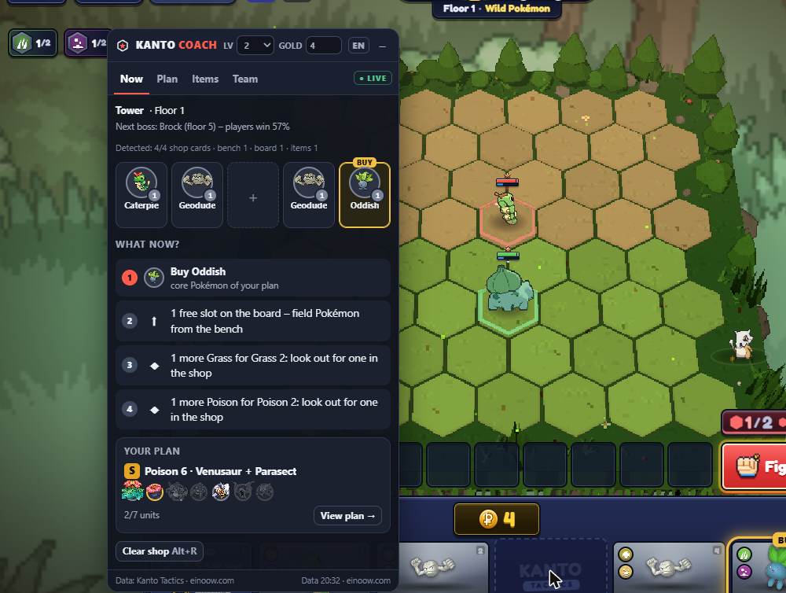
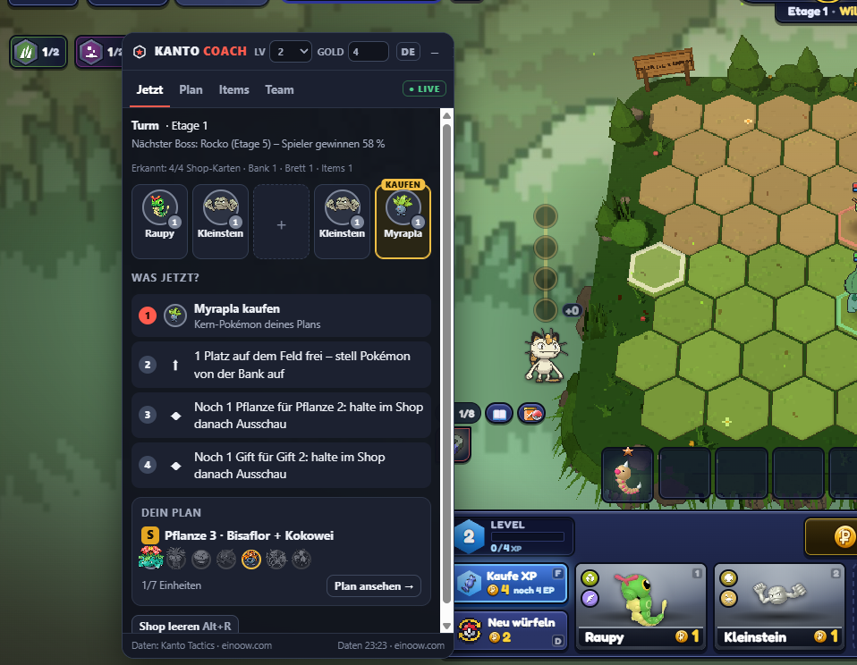
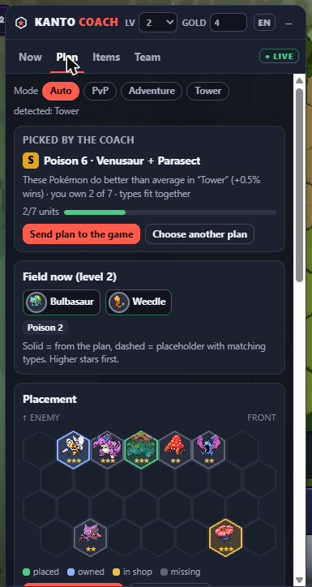
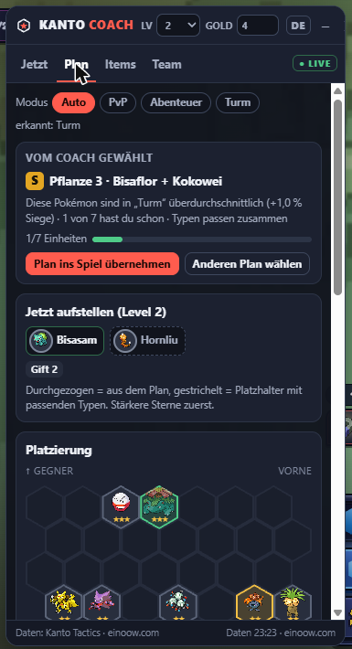
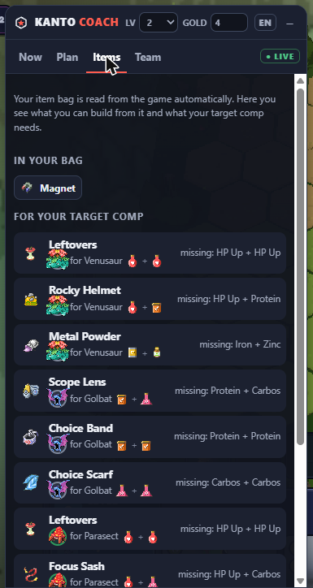
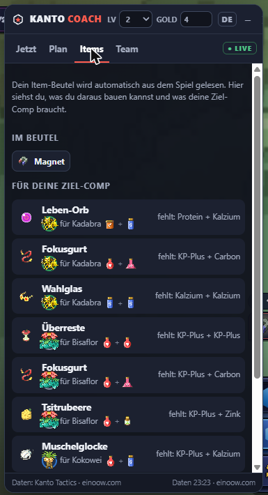
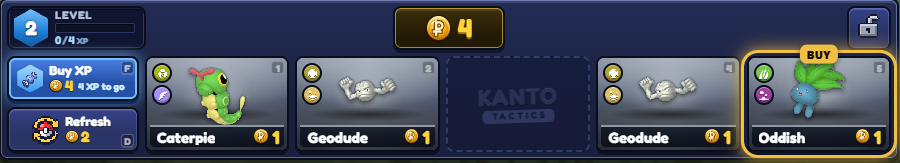
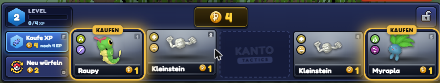

Gewinne öfter in Kanto Tactics.Win more often in Kanto Tactics.
Kanto Coach ist ein Chrome-Overlay neben dem Spiel. Es liest Shop, Bank, Brett, Items, Level und Gold und sagt dir in jeder Runde, was du kaufen, sparen und aufstellen solltest – und kreist passende Pokémon direkt im Spiel ein.
Kanto Coach is a Chrome overlay next to the game. It reads your shop, bench, board, items, level and gold and tells you every round what to buy, save and field – and circles matching Pokémon right in the game.


Was es kannWhat it does
„Was jetzt?““What now?”
Nummerierte Schritte mit Begründung: Stern-Käufe, Kern-Pokémon deines Plans, Typ-Stufen, Gold sparen bis zur Zinsgrenze, würfeln, EP kaufen.
Numbered steps with reasons: star upgrades, core Pokémon of your plan, trait tiers, saving up to the interest cap, rerolling, buying XP.
Ein Plan für dichA plan for you
PvP: Meta-Comps nach Baubarkeit mit deinem Team. Abenteuer & Turm: Comps mit Typ-Synergie, bewertet nach echten Siegquoten im Modus.
PvP: meta comps ranked by how buildable they are with your team. Adventure & Tower: comps with type synergy, rated by real win rates in that mode.
Plan ins SpielPlan into the game
Ein Klick kopiert den Plan als Team-Code. Im Spiel „Planer → Code einfügen“ – die Aufstellung erscheint als Schatten auf dem Brett.
One click copies the plan as a team code. In the game “Planner → Paste code” – the placement appears as shadows on the board.
Markierungen im SpielMarks in the game
KAUFEN, ★★! und +TYP direkt an den Shop-Karten, ZIEL an den Item-Komponenten – nur was du dir leisten kannst.
BUY, ★★! and +TYPE right on the shop cards, TARGET on item components – only what you can afford.
Abenteuer & TurmAdventure & Tower
Erkennt Station, Etage und Schwierigkeit, zeigt den nächsten Boss mit Siegquote und warnt vor schweren Kämpfen.
Detects stop, floor and difficulty, shows the next boss with its win rate and warns before hard fights.
ItemsItems
Liest deinen Beutel, zeigt, was du jetzt bauen kannst, und wer welches Item tragen soll.
Reads your bag, shows what you can build now and who should carry which item.






InstallierenInstall
- ZIP herunterladen und entpacken.
- Download the ZIP and unzip it.
- In Chrome
chrome://extensionsöffnen und oben rechts den Entwicklermodus einschalten. - Open
chrome://extensionsin Chrome and turn on Developer mode (top right). - „Entpackte Erweiterung laden“ klicken und den Ordner
extensionauswählen. - Click “Load unpacked” and choose the
extensionfolder. - Kanto Tactics öffnen – das Overlay erscheint. Alt+K blendet es ein und aus, Alt+R leert den Shop nach dem Würfeln.
- Open Kanto Tactics – the overlay appears. Alt+K toggles it, Alt+R clears the shop after a reroll.
Fair und privatFair and private
- Liest nur, was im Spiel sichtbar ist
- Klickt, kauft und verschickt nichts
- Keine Konten, keine Analyse, kein Tracking
- Alles bleibt lokal in deinem Browser
- Reads only what is visible in the game
- Clicks, buys and sends nothing
- No accounts, no analytics, no tracking
- Everything stays local in your browser
Woher die Zahlen kommenWhere the numbers come from
Meta-Comps, Tierlisten und Siegquoten im Abenteuer und Turm stammen aus der öffentlichen API von einoow.com (Ranked-Spiele der letzten 7 Tage), höchstens stündlich abgefragt und zwischengespeichert. Fällt die Statistik aus, baut der Coach Ersatz-Pläne aus den Spielregeln.
Meta comps, tier lists and win rates in adventure and tower come from einoow.com’s public API (ranked games of the last 7 days), fetched at most hourly and cached. If the stats are down, the coach builds fallback plans from the game rules.